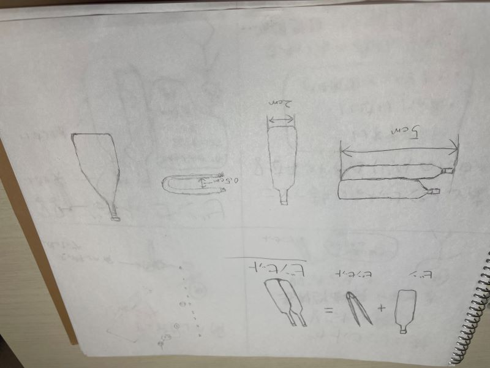
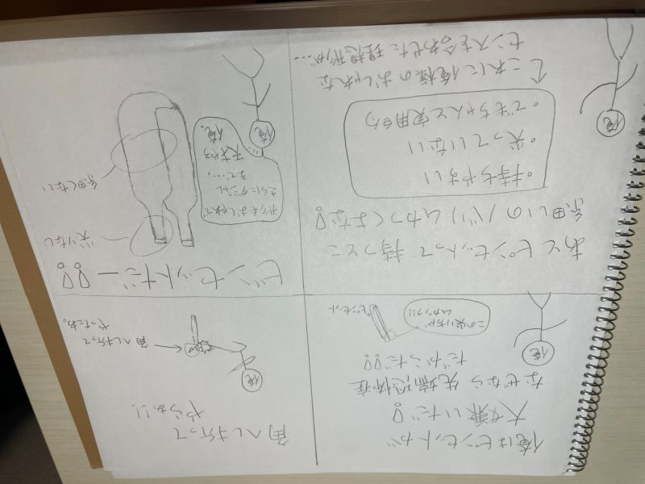
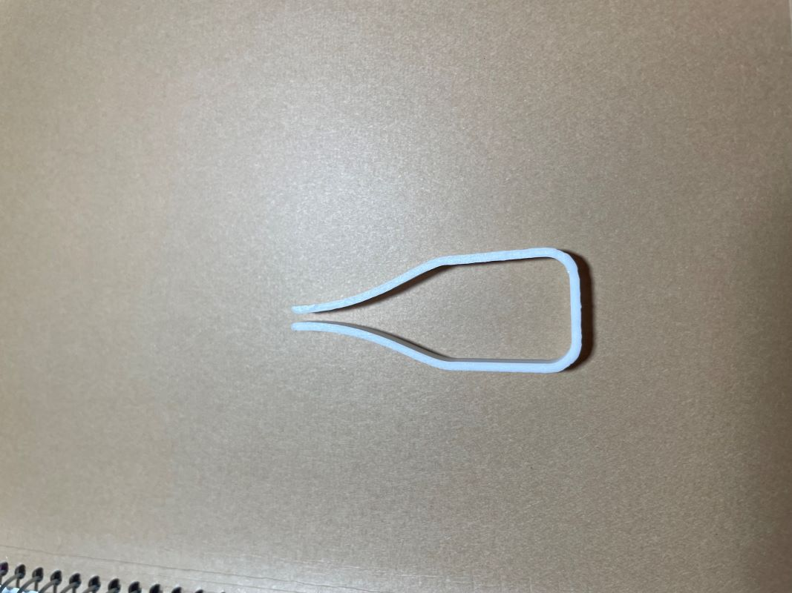
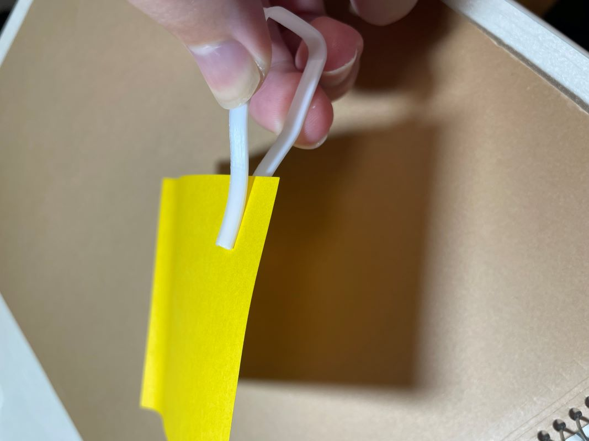
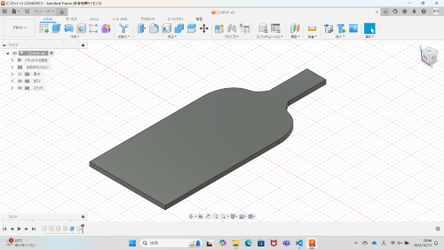
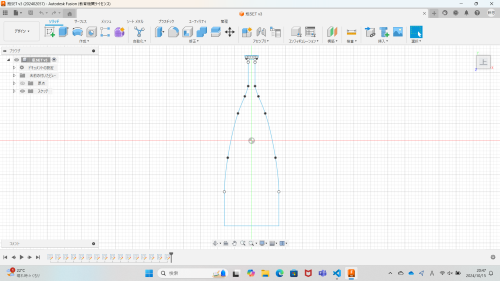
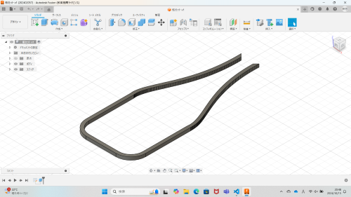

ビンセット
[手書きのスケッチ]

[ストーリーボード]

[完成品]


[作品の説明]
ビンの形をしたピンセット。名付けてビンセット。
長さ5cm × 幅2cm × 高さ5mm
[なぜビンセットを作ろうと思ったか]
私はピンセットが大嫌いです。なぜなら細くて尖っているからです。先端恐怖症の私からすればピンセットのような鋭利なものは凶器だとしか思えないのです。
そしてもう一つ。ピンセットは持ちにくいから大嫌いです。持ち手が細すぎてイライラします。だから持ち手が太くて尖っていないけど、ちゃんと実用的な
ピンセットを作ろう！と考えた結果、一番理想的な形が「ビン」だったのです・・・。だからビンセットを作ったのです・・・。
[制作過程]
最初はピンセットの側面がビンの形になっているピンセットを作ろうとしました。


しかしサイズ的に不可能でした。実用性よりもビンのデザインへのこだわりが強すぎて、かなり時間を割いてしまいましたがようやくデザインへのこだわりを
捨ててシンプルにピンセットそのものがビンの形をしていて、蓋の部分で物をつかむという形にしました。

最初の理想とは違う形になりましたが、いい作品ができたとは思います。しかし個人的にはシンプルすぎてクオリティはやや低めだと思いました。
自分はしっかりデザインを固めてからファブラボに行き、プリントをしましたがそれではダメだと気付きました。とにかく大失敗してもいいから、
何度も何度もトライ＆エラーを繰り返すこと。繰り返しているつもりでいたけど、デザインとプリントの繰り返しはまだまだ足りていなかったと思いました。
このビンセットは私の成長記録の1ページ目として残し、これからもっとクオリティの高い作品を作れるようになりたいと思います。